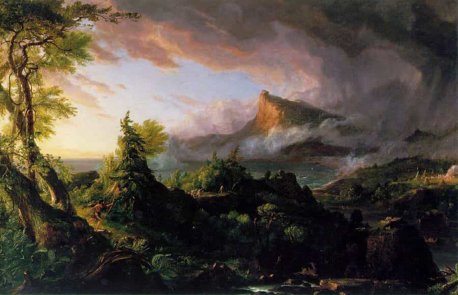
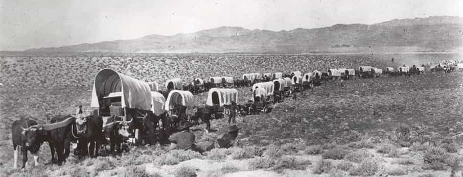

< < < Back
The Age Of Pioneers – Return Of Kings
Foreword
The “Fate Of Empires and Search For Survival“, is an essay written by Sir John Glubb and published in 1977. Unfortunately the Fate Of Empires is no longer in publication, there are however, second hand copies on eBay and a free pdf version on line which can be found with a simple google search. This is a strongly recommended read for the red pill community as it touches on several subjects which are of interest her on the ROK.
Life
Sir John Glubb, also known as Glubb Pasha, was a distinguished lieutenant general who served in the great war and commanded the Transjordanian Arab legion. His life experience compelled him to author the fate of empires to warn those who would listen about the pitfalls of a civilisation with endless resources and power.
Sir John was an avid historian, his travels may have stoked his interest in empires at an early age. His essay is the result of a culmination of his military career and historical research. The essay delves into the reasons for the rise and fall of empires and concludes that all empires will suffer the same fate should the lessons from history go unlearnt. Sir John was a harsh critic of the history education curriculum. In his view, history ought to be examined as a whole, and not as separate collection of events in time.
“The experiences of the human race have been recorded, in more or less detail, for some four thousand years. If we attempt to study such a period of time in as many countries as possible, we seem to discover the same patterns constantly repeated under widely differing conditions of climate, culture and religion. Surely, we ask ourselves, if we studied calmly and impartially the history of human institutions and development over these four thousand years, should we not reach conclusions which would assist to solve our problems today? For everything that is occurring around us has happened again and again before…no such conception ever appears to have entered the minds of historians. In general, historical teaching in schools is limited to this small island [UK]. We endlessly mull over Tudors and Stewarts, the Battle of Crecy, and Guy Fawkes. ” – Sir John Glubb
After retirement, he authored seventeen books, majoritarily focusing on the Middle East where he lived and served for some thirty-six years.
The Fate Of Empires
It is important to note that what Sir John referred to as an empire, is what we now call a superpower. Sir John stated in his essay that the rules of empires were also applicable to the United States and the Soviet Union.
Sir John made some observations regarding the lifetime of empires.
“Empires do not usually begin or end on a certain date. There is a gradual period of expansion and then a period of decline. Human affairs are subject to many chances, and it is not to be expected that they could be calculated with mathematical accuracy.”
“Nevertheless, it is suggested that there is sufficient resemblance between empires to justify further study.”
“Not all Empires endured their full lifespan.”
“An interesting deduction from the figures seems to be that the duration of empires does not depend on the speed of travel or the nature of the weapons. The Assyrians marched on foot and fought with spears, bows and arrows. The British used artillery, railways and ocean-going ships. Yet the two empires lasted approximately the same periods.”
“Empires last an approximate 250 years”
In “The Fate of Empires“, Rome is divided into two periods. The Roman Republic and the Roman Empire, a notion many here will oppose. From this, he made the following conclusions.
“…the periods of duration of different empires at varied epochs show a remarkable similarity.”
“Immense changes in the technology of transport and warfare do not seem to affect the life-expectation of an empire.”
“The changes in technology of transport, however, affected the shape of empires.”
“One of the very few units of measurement which have not seriously changed since the Assyrians is the human ‘generation’, a period of about 25 years.”
“The period of an Empire, 250 years, represents about ten generations of people.”
By looking at the differences in people across generations, Sir John concluded that empires are built and destroyed by their own people due to these very differences. As time progresses in the life of an empire, the citizens priorities shift across the ages and these priorities in turn transform the empire.
The different ages in which empires change is remarkably similar. These are characterised by a series of interlinking events which lead from one age to another. The ages in empires are the age of pioneers, the age of conquest, the age of commerce, the age of affluence, the age of intellect and the age of decadence. These ages come in the sequence denoted and often interlap with one another as time progresses.
The Age of Pioneers – Outburst

There is little information about empires before their outburst. The most of what we know, is that these were not deemed as powerful or even civilised nations. However, we do know that the people of these nations had a drive for conquest, most likely driven by seeing the wealth and power of their neighbour nations. The people of these nations would burst with energy and courage from their primitive setting, taking large swathes of land. Their motivations were part religious, part code of honour.
“Again and again we find a small nation, treated as insignificant by its contemporaries, suddenly emerging from its homeland and overrunning large areas of the world. Prior to Phillip (359-338 B.C)”, Macedon had been an insignificant state to the north of Greece. Persia was the great power of the time, completely dominated the area from Eastern Europe to India. Yet by 323 B.C, thirty six years after the accession of Philip, the Persian Empire had ceased to exist, and the Macedonian Empire extended from the Danube to India, including Egypt”
“In the year A.D 600, the world was divided between two superpower groups….the two powers were the eastern Roman Empire and the Persian Empire. The Arabs were then the despise and backward inhabitants of the Arabian Peninsula. They consisted chiefly of wandering tribes, and had no government, no constitution and no army. In 1633, the Arabs burst out of their desert peninsula, and simultaneously attacked the two superpowers. Within twenty years, the Persian Empire had ceased to exist.”
“At the beginning of the thirteenth century, the Mongols were a group of savage tribes in the steppes of Mongolia. In 1211, Genghis Khan invaded China. By 1253, the Mongols had established an empire extending from Asian minor to the China sea”
“The Arabs ruled the greater part of Spain for 780 years, from 712 A.D, to 1492. During these eight centuries, there had been no Spanish nation, the petty kings of Aragon and Castile alone holding on in the mountains. The agreement between Ferdinand and Isabella and Christopher Columbus was signed immediately after the fall of Granada, the last Arab enclave in Spain, in 1492. Within fifty years, Cortez had conquered Mexico, and Spain was the worlds greatest empire.”
In each example, the conquerors were poor, hard working and enterprising. Taking large risks and demonstrating aggression against defending empires. Perhaps, having nothing to lose makes men immune to the fear of death.
“The decaying empires which they overthrow are wealthy and defensively minded. In the time of the Roman greatness, the legions used to dig a ditch round their camps at night to avoid surprise. But the ditches were meere earthworks, and between them there were wide spaces left through which the Romans could counterattack. But as Rome grew older, the earthworks became high walls, through which access was given only by narrow gates. Counterattacks were no longer possible. The legions were now passive defenders.”
If we look at the last excerpt and we apply it to todays world, we can see it holds true. In the past, nations like the Britain and America fought other nations (and each other) against the odds with bravery and courage. In todays age, citizens of both of these nations fear the consequences of terrorism, despite the relatively limited amount of damage these can inflict on them, when compared to the wars of the past.
Contemporary America is gripped with the fear of adversity, but it was not always so. In the beginning of the new nation, American rebels had successfully repelled the greatest empire of the time. Once freed from their former king, the citizens of the new nation expanded across a vast and unfamiliar continent until they reached the Pacific ocean. Once they reached the Pacific they did not stop there, they continued on until the Island of Hawaii. Whole families relocated inland by cart, enduring harsh winters and bad harvests. Against the odds, they prevailed. How many present day Americans would venture into unfamiliar land with their families to set up a farm? Not many.

Why were the ancestors of Americans willing to go through so much for freedom? And why are the present day Americans giving that which their ancestors fought for away, when they have everything?
“But the new nation is not only distinguished by victory in battle, but by unresting enterprise in every field. Men hack their way through jungles, climb mountains, or brave through the seas. The Arabs crossed the straits of Gibraltar in A.D 711 with 12,000 men, defeated a Gothic army of more than twice their strength, marched straight over 250 miles of unknown territory and seized the Gothic capital of Toledo.”
“Uninhibited by text books or book learning, action is their solution to every problem. Poor , hardy, often half-starved and ill-clad they abound in courage, energy and initiative, overcome every obstacle and always seem to be in control of the situation.”
It is this ethos that drives an impoverished people to conquer, and thereby empires are formed, but as Sir John noted before, “not all empires endured their full lifespan”. If we look at two historically-recent failed empires, the Third Reich and Imperial Japan, we see that the people of post war Japan and Germany worked hard to rebuild their nations from the rubble. Whilst their military expansionism was crushed, their drive to work themselves out of poverty was not.
If either Japan or Germany had not been defeated during the second world war, and instead had gone through the full lifecycle of empire until the age of decadence, it would be very likely that these would have been unable to rebuild their nations should they have faced a future collapse. During the age of decadence (more on that in a future post), the people become cynical and frivolous, and they no longer make an effort to save themselves because they are not convinced anything is worth saving. However during the age of pioneers the people are immune to such thinking and instead go about life with a can-do attitude.
Conclusion
We have become accustomed to material wealth which we are unwilling to sacrifice. Our comfort has been placed above our values and liberties. As history shows us, this is a dangerous path to walk. Throughout history, nations that have been on the downslide are engulfed by nations been on the uprise. These nations are characterised by the backwardness of their peoples but whose members are determined to carve their place on the world.
Read More: How To Harness The Power Of Fear


{kind=link}
{kind=link}